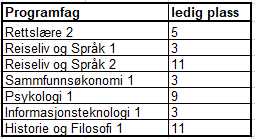

Vi har ikke ennå oversikt om kontaktlærere for neste skoleår. Hva bør vi skrive inn i excel?
Bare la det står blank i excel ark. Vi ber om kontaktlærer på ny ved skolestart og fyller på etter hvert.
Jeg har levert excel ark nå, hva blir neste sti?
Jeg (Martijn) skal se på påmeldingene og sortere alt (frist 26.mars). Jeg håper at alle ønskene kan bli realisert,
jeg hanterer prosedyrene som er publisert på denne side.
Jeg finner ikke excel ark (målark) igjen...
Don't panic, du kan laste ned her: maalark.xlsx
Nå har vi fått beskjed om tilgjengelig plass for våre elevene, hvordan videre (til sommerferie)?
Når det blir små forandringer, gjerne ta kontakt med Martijn B.
Hvilke fag har ledig plass ennå (oppdatert 8.april 2021)?

Ved spørsmål, gjerne ta kontakt med Martijn B.